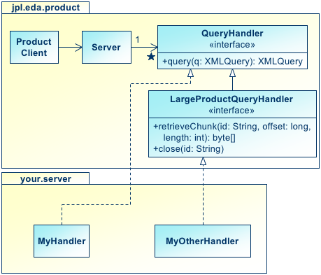

Project Documentation
User's Guide

This tutorial introduces starting a basic product server. This product server will be capable of accepting queries, but will not actually respond with any data. By completing this tutorial, you'll have a working product server in which you can install more complex logic to actually handle product requests.
The OODT Product Service is a remotely accessible software component that enables you to retrieve products, which can be any kind of data. In OODT, a product client passes a query into a known product server. The product server delegates that query to its installed query handlers; each one gets a chance at satisfying the query with requested data. Query handlers are the interfaces between the generic OODT framework and your system-specific data stores. They have the job of understanding the passed in query, finding or even synthesizing the matching product, applying conversions to Internet-standard formats, and returning results. The product service then collects all the matching products from the query handlers and returns them to the product client.
To deploy a product server, you need to come up with query handlers that interface to your site- or discipline-specific data stores. Then, start a product server and inform it of what query handlers to use.
The OODT product service delegates incoming queries to zero or more query handlers. In the case of zero query handlers, the product service always replies to every query with "zero matches." Otherwise, the query handlers get a chance to satisfy the query, and may or may not add matching products to the result.
The following class diagram demonstrates this delegation model:
Here, a product client calls a server to process a query for products. The server delegates to query handlers, which are Java objects that implement the QueryHandler interface. Two query handlers in this diagram, MyHandler and MyOtherHandler can both try to satisfy the query by adding matching products to the total result. They can each add more than one matching product, just one, or none at all. The server then returns the matches, if any, to the client.
In OODT, a query contains its matching products. When a client passes a query to a product server, the query object returns to the client with matching products embedded in it. This can, however, make query objects too large to be comfortably passed around a network of OODT services (query objects must reside completely in memory). In this case, a special extension of a QueryHandler, a LargeProductQueryHandler, can instead place a reference to the product data in the query.
To product clients, the difference is invisible: the product data is still accessed from the query object the same way. As a developer of product services, though, you may need to decide which kind of query handler to make: regular or large.
The product service is a remotely accessible object. Therefore, product clients access it with a remote object access protocol. Currently, OODT supports RMI and CORBA. You can also access product services with HTTP; in this case, a proxy object provides the HTTP interface while internally it accesses a product service with RMI or CORBA.
For this tutorial, we'll use RMI because it's enormously less complex than CORBA.
To start a product service, we'll create a directory structure that will hold software components (jar files) as well as scripts that will simplify the usually over-long Java command lines. (Note that these examples are for Mac OS X, Linux, or other Unix-like systems. Windows users will have to adapt.)
Let's start by making a directory hierarchy for our product service called ps (this example uses a C-style shell csh, if you're using bash or another style shell, substitute the appropriate commands).
% mkdir ps % cd ps % setenv PS_HOME `pwd` % mkdir bin lib % ls -RF $PS_HOME bin/ lib/ /Users/kelly/tmp/ps/bin: /Users/kelly/tmp/ps/lib:
Note that we're using an environment variable PS_HOME to contain the path of the directory we're using to hold everything. We'll use this environment variable as we develop the scripts to launch the product service.
Since we're using Remote Method Invocation (RMI) for this tutorial, we'll need to start an RMI Registry. An RMI Registry serves as a catalog that maps between named objects, such as your product server, to the appropriate network address and port where the object can be located. Your product client will use the RMI registry to locate the product server so it can connect to the product server and communicate with it.
To start an RMI Registry, you'll need the following components:
Download each component's binary distribution, unpack each one, and take collect the jar files into the lib directory. For example:
% cp /tmp/edm-commons-2.2.5/*.jar $PS_HOME/lib % cp /tmp/grid-product-3.0.3/*.jar $PS_HOME/lib % cp /tmp/rmi-registry-1.0.0/*.jar $PS_HOME/lib % ls -l $PS_HOME/lib total 312 -rw-r--r-- 1 kelly kelly 149503 24 Feb 14:06 edm-commons-2.2.5.jar -rw-r--r-- 1 kelly kelly 120844 24 Feb 14:07 grid-product-3.0.3.jar -rw-r--r-- 1 kelly kelly 8055 24 Feb 14:07 rmi-registry-1.0.0.jar
To keep from having to type long Java command lines, we'll create a simple shell script that will start the RMI registry. We'll call it rmi-reg and stick it in the bin directory.
Here's the rmi-reg script:
#!/bin/sh
exec java -Djava.ext.dirs=$PS_HOME/lib \
gov.nasa.jpl.oodt.rmi.RMIRegistryThis script tells the Java virtual machine to find extension jars in the directory $PS_HOME/lib. It then says that the main class to execute is gov.nasa.jpl.oodt.rmi.RMIRegistry.
Go ahead and make this script executable and start the RMI Registry. In another window (with the appropriate setting of PS_HOME), run $PS_HOME/bin/rmi-reg. You should see output similar to the following:
% chmod 755 $PS_HOME/bin/rmi-reg % $PS_HOME/bin/rmi-reg Thu Feb 24 14:10:25 CST 2005: no objects registered
The RMI Registry is now running. Every two minutes it will display an update of all registered objects. Naturally, we don't have any product service running right now, so it will say no objects registered. Go ahead and ignore this window for now. It's time to start our product server.
With an RMI Registry in place, we're ready to start our product server. As with the RMI Registry, we'll need the software components and to make a script to launch it.
We already have two of the components needed to start the product server, edm-commons and grid-product. We need two more:
As before, put these jars into the $PS_HOME/lib directory:
% ls -l $PS_HOME/lib total 376 -rw-r--r-- 1 kelly kelly 149503 24 Feb 14:06 edm-commons-2.2.5.jar -rw-r--r-- 1 kelly kelly 43879 24 Feb 14:35 edm-query-2.0.2.jar -rw-r--r-- 1 kelly kelly 120844 24 Feb 14:07 grid-product-3.0.3.jar -rw-r--r-- 1 kelly kelly 8055 24 Feb 14:07 rmi-registry-1.0.0.jar -rw-r--r-- 1 kelly kelly 53978 24 Feb 14:35 xmlrpc-1.1.jar
To launch the product server, we'll create a script called ps in the $PS_HOME/bin directory. Here's its contents:
#!/bin/sh
exec java -Djava.ext.dirs=$PS_HOME/lib \
jpl.eda.ExecServer \
jpl.eda.product.rmi.ProductServiceImpl \
urn:eda:rmi:MyProductServiceLike with the RMI server, this tells Java where to find extension jars ($PS_HOME/lib). The main class is jpl.eda.ExecServer, this is a framework class from edm-commons that provides basic start-up functions for a variety of services. In this case, the service is jpl.eda.product.rmi.ProductServiceImpl; this is the name of the class that provides the RMI version of the OODT product service. We then pass in one final command-line argument, urn:eda:rmi:MyProductService. This names the product service.
The product service registers itself using a name provided on the command-line, in this case, urn:eda:rmi:MyProductService. Let's take apart the name and see how it works.
If you're familiar with web standards, you can see that the name is a Uniform Resource Name (URN), since it starts with urn:. The OODT Framework uses URNs to identify services and other objects. The eda: tells that the name is part of the Enterprise Data Architecture (EDA) namespace. (EDA was the name of a project related to OODT that was merged with OODT. For now, just always use eda: in your URNs.)
Next comes rmi:. This is a special flag for the OODT services that tells that we're using a name of an RMI-accessible object. The OODT framework will know to use an RMI Registry to register the server.
Finally is MyProductService. This is the actual name used in the RMI Registry. You can call your product service anything you want. For example, suppose you have three product servers; one in the US, one in Canada, and one in Australia. You might name them:
Or you might prefer to use ISO country codes. Or you might name them according to the kinds of products they serve, such as urn:eda:rmi:Biomarkers or urn:eda:rmi:BusniessForecasts.
The RMI Registry will happily re-assign a name if one's already in use, so when deploying your own product servers, be sure to give each one a unique name.
Make the ps script executable and start the product server at this time. Do this in a separate window with the appropriate setting of PS_HOME:
% chmod 755 $PS_HOME/bin/ps % $PS_HOME/bin/ps Object context ready; delegating to: [jpl.eda.object.jndi.RMIContext@94257f]
The product service is now running and ready to accept product queries. Since we didn't tell it what query handlers to use, it will always respond with zero matching products. That may not be interesting, but it's a good test to see if we can at least launch a product server. Now, let's launch a product client and query it.
To query the product server, we use a product client. The Java class jpl.eda.product.ProductClient provides the API for your own programs to query for and retrieve products. But it's also an executable class, so we can run it from the command-line in order to test our product server. However, let's again make a script to make invoking it a bit easier.
We'll call the script pc for "product client," and it will take a single command line argument, which will be the query expression to pass into the product server. Query expressions define the constraints on the kinds of products we want to achieve. Since the product server we've set up will always respond with zero products, though, we can pass in any syntactically valid query expression.
Here's the script:
#!/bin/sh
if [ $# -ne 1 ]; then
echo "Usage: `basename $0` <query-expression>" 1>&2
exit 1
fi
exec java -Djava.ext.dirs=$PS_HOME/lib \
jpl.eda.product.ProductClient \
-out \
urn:eda:rmi:MyProductService \
"$1"This script checks to make sure there's exactly one command-line argument, the query expression. If there isn't, it prints a helpful usage message to the standard error stream, as is Unix tradition. Otherwise, it will execute the jpl.eda.product.ProductClient class with Java. When executed, this class expects three command-line arguments:
Now we can make this script executable and run it:
% chmod 755 $PS_HOME/bin/pc $PS_HOME/bin/pc "x = 3" Object context ready; delegating to: [jpl.eda.object.jndi.RMIContext@c79809] No matching results
Although not terribly exciting, this is good news. Here's what happened:
You can make this example slightly more interesting by changing the -out in the pc script to -xml. Now, when you run it, you'll see an XML document describing the query. One of the pertinent sections to note is:
...<queryResultSet/>...
This empty XML element means that there were no results.
By following this tutorial, you've started both an RMI Registry and a basic product server. You've queried that product server to insure that you can communicate with it. In later tutorials, you'll build on this product server by adding a query handler to it and returning actual product data.